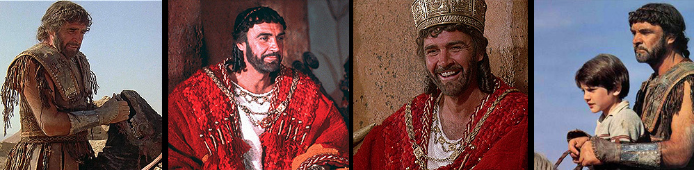
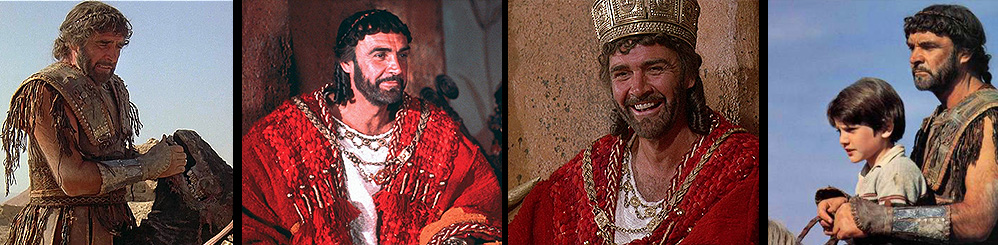
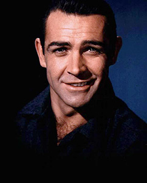
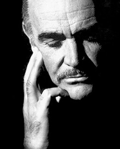

Sean Connery Biography

The name needs simply no introduction. Yes, mention is being made of that handsome hunk, voted 'The sexiest man' alive by People Magazine in 1989.
He is that kind of an actor who is the heartthrob of almost all the generations existing.
But it took a lot of his efforts to come to this position from the very start. Sex symbol Sean Connery however made it possible to be known as what he is today.
His journey was quite an adventurous one and full of struggle, which ultimately led him to the highest peak of stardom from a mere laborer.
Sean Connery happened to come from a working class family and probably that gave him the drive to move upwards and more.
His father was a truck driver and mother, a cleaning woman. No wonder getting their food was an everyday affair.
Young Sean also had to contribute to his family working as a milkman, delivering newspaper and even as a butcher's assistance.
Sean joined the navy after his school days and later he participated in the Mr. Universe and stood 3rd.
Sean got a role in the chorus line of the London stage production of South Pacific in 1952 for his wonderful physique.
He got his first break in the remake of an American tele-drama ‘Requiem for a Heavyweight' after which he never had to look back.
Bond, James Bond
Connery got the blasting role of James bond in the year 1962 and his performance was just mind blowing. This affable young man was so much suited to the role of a private detective agent with all his wit and charms that till date we cannot think of James Bond without him... Of his 007 films mention may be made of “From Russia With Love”, “Thunderball”, “Goldfinger” and “You Only Love Twice”. But this versatile genius did not let that tag stick to him forever. He took up more varied roles and they proved to be quite challenging.
Beyond 007
Sexy Sean made more glorious works in his post-007 career of which mention must be made of “Women Of Straw”. He paired with Gina Lollobrigida and this film brought him his first $1 million pay check. Anyways, his post-James Bond career sites a handful of hits like The Man Who Would Be King, Murder on the Orient Express, A Bridge Too Far and on goes the list. Moreover his capability was stirred up in the film The Name Of The Rose. Farther Sean bagged away the Academy Award for Best Supporting Actor for the film The Untouchables in the year 1987 where he played as a stubborn cop. Indiana Jones and the Last Crusade and Hunt For Red October were the following hits at the box office. Lastly mention must be made of Entrapment where he played opposite Catherine Zeta Jones and was equally admired by the male viewers! Steven Spielberg has marked this Virgo man as one of the 7 genuine movie stars!
Honors
Reflecting a tangible symbol of distinction, Connery bagged the British Academy Of Film And Television Arts (BAFTA) Lifetime Achievement Award in 1990. For his outstanding contribution in the entertainment field he received the Cecile B. Demille Award in 1995 from the Hollywood Foreign Press Association. The Film Society of Lincoln Center in New York honored him with the Gala Tribute in the year 1997 and the very next year he got the British Academy Fellowship from BAFTA. The next consecutive two years were also happening for him since he was honored by the Kennedy Center in 1999 and received the knighthood from the British Government to become Sir Sean Connery in 2000. He was also honored by France with the Legion d'Honeur and the Commandeur desArts and des Letters.